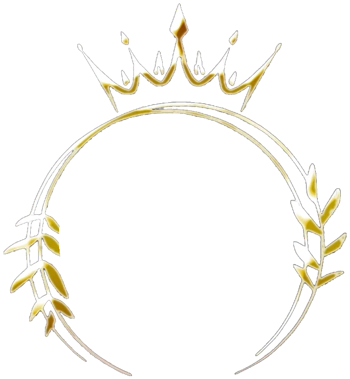

Automotor
Responsabilidad civil, terceros completo o todo riesgo. Contame si lo usás particular o para trabajar y lo vemos juntos.
Consultar por mi autoProductora asesora de seguros

Auto, moto, hogar, vida, retiro, caución y accidentes personales. Te explico cada póliza en criollo y te acompaño cuando la necesitás.
Jean Jaurès 5854 · Isidro Casanova
Estas son las consultas que más me llegan. Si lo que querés asegurar no está en la lista, preguntame igual.
Responsabilidad civil, terceros completo o todo riesgo. Contame si lo usás particular o para trabajar y lo vemos juntos.
Consultar por mi autoLa de todos los días o la del fin de semana. Con marca, modelo y año ya puedo cotizar.
ConsultarLa caución de alquiler funciona como garantía del contrato y reemplaza a la garantía propietaria. También hay cauciones para obras, contratos, aduana y trámites judiciales.
Antes de firmar, confirmá que la inmobiliaria o el propietario la acepta.
Consultar por una cauciónCasa, departamento o PH, seas dueño o inquilino.
ConsultarPara la bici con la que te movés o entrenás.
ConsultarEl teléfono que usás todo el día, cubierto.
ConsultarPara que tu familia quede respaldada si te pasa algo.
ConsultarUn ahorro de largo plazo para complementar tu jubilación.
ConsultarSi trabajás por tu cuenta, para una obra o para un evento puntual.
ConsultarTrabajo todas las ramas. Contame qué necesitás asegurar.
Contarle a LorenaSoy Lorena Tria, productora asesora de seguros. Atiendo en mi oficina de Jean Jaurès 5854, en Isidro Casanova, y también por WhatsApp o por mail.
Algunas de las pólizas que ofrezco son de BBVA Seguros.
Sumá todo lo que querés asegurar. Te pido solo los datos que necesito para cotizar y me llega un único mensaje por WhatsApp.
Por WhatsApp, por mail o en la oficina. Con los datos básicos ya puedo empezar.
Te explico qué cubre cada una y la diferencia de precio, para que elijas tranquilo.
Me ocupo del trámite con la compañía y te mando la documentación.
En las renovaciones, los cambios y, sobre todo, si tenés un siniestro.
Horario de atención
Jean Jaurès 5854
Isidro Casanova (1765), La Matanza
| Lunes a viernes | 9:30 a 13 · 16:30 a 19:30 |
|---|---|
| Sábados | 9:30 a 13:30 |
| Domingos | Cerrado · escribime y te respondo el lunes |
Marca, modelo, versión y año; si tiene GNC; si lo usás particular o para trabajar; y la localidad donde queda guardado. Si tenés la cédula a mano, mandame una foto por WhatsApp.
Primero, cuidate vos y a los demás. Sacá fotos, anotá los datos del otro conductor, de su seguro y de testigos, y escribime. La Ley de Seguros 17.418 (art. 46) fija tres días desde que conocés el siniestro para denunciarlo a la aseguradora: no lo dejes pasar.
Es la persona inscripta ante la Superintendencia de Seguros de la Nación que te asesora, te ayuda a elegir la cobertura y te acompaña mientras la póliza está vigente.
Es una póliza que funciona como garantía del contrato de alquiler: la aseguradora responde ante el propietario según lo que cubra la póliza. Antes de contratarla conviene confirmar que la inmobiliaria o el propietario la acepta.
Sí. En Armá tu consulta sumás todas las ramas que necesites y me llega un solo mensaje por WhatsApp.
No es necesario. Podés venir a Jean Jaurès 5854, Isidro Casanova, en el horario de atención, o hacer la consulta por WhatsApp o por mail.
Mandame un mensaje y lo vemos. Si ya tenés un seguro, traeme la póliza y te digo qué cubre.
Superintendencia de Seguros de la Nación · Organismo de control
0800-666-8400 · www.argentina.gob.ar/ssn